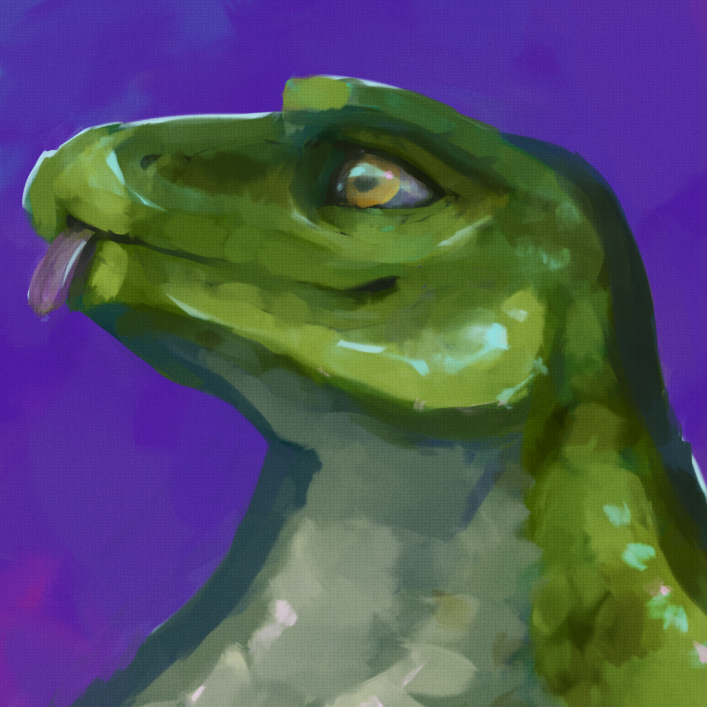

Hi! I'm Rufus

This site was made for fun. I wanted a place where I could keep my stuff without worrying about changing social media regulations or loosing what I had made for any reason. I'm trying to put all the things that I like into here as a way to let people know more about me, figure out what I like to do and chat about and also help me not forget about things!
This site was built using a (still unnamed) compiler I created specifically to be able to make simple html sites fast without having to deal with node or having to keep all components on all pages updated by hand. I've talked about it on these comments on my bluesky post, but I'll try to properly write about it over here once I've finished the main features I planned for it!
I don't want to forget to credit any project that has assisted in brinking this page to life in any way.